Translation
Translation, in this context, is defined as taking a local currency amount and applying a foreign currency rate to arrive at a translated value in a given reporting currency. This chapter covers common foreign currency capabilities that are available to you in OneStream; by the end of the chapter, you will be equipped with a general understanding of various translation-related needs.
First, we will cover what and how to use rate types conceptually as part of the Background section of this chapter, and then how rates are used in OneStream as part of the Foundational FX Properties section.
Specifically, in Foundational FX Properties, we will cover the locations within the application where you would consider updating settings to allow for certain translation capabilities, such as handling intermediary parents, currency translation adjustment (CTA), overrides, and input currencies.
Then, we will combine what we learned as a use case on the pros and cons when you want to implement the ability to report actuals using prior year rates. Finally, we will end the chapter with various ways to load and view FX rates as part of the Loading FX Rates and Viewing FX Rates sections.
Translation
Background
Foreign currency exchange (FX) rates are rates used to convert one currency to another. This is common for companies that have various currency reporting requirements. For the purposes of this chapter, our terminology will be:
Functional currency, which will be used synonymously with local currency. Functional currency is defined as the main currency in which a company conducts its business. The currency setting on the entity member within OneStream is commonly referred to as “local currency”, which corresponds to functional currency.
Transactional currency, which will be used synonymously with input currency. Transactional currency is defined as the currency for payments, and the transactional currency can be different from the functional currency of the company. It is most common to have transactional currency captured in the ERP (Enterprise Resource Planning) system, while OneStream handles the functional currencies for consolidation and close processes.
Reporting currency is the currency used to prepare financial statements. Within OneStream, the reporting currency is typically the top parent’s currency (e.g., USD), while the subsidiaries or remaining companies will commonly use their local currencies for reporting. This chapter will cover the implications of using
C#Localversus enabling every currency for reporting purposes.Periodic is defined as the activity that happens for a given period. For the purposes of this chapter, the examples provided will be in relation to a given month in a monthly application.
Translation › Background
Direct Versus Periodic Rule Types
In OneStream, we have rule types to dictate how an account should be translated. The rule types are Direct and Periodic. These rule types are set on the cube(s) or scenario(s) and used in conjunction with rate type settings to determine account translation behavior.
Direct translation refers to the translation of ending balances. Periodic refers to the translation of the periodic (e.g., monthly) activity amounts, which are then appended to the existing amounts. Direct translation is commonly applied on balance sheet accounts, while Periodic translation is applied to income statement accounts.
Periodic (usually P&L-related)
| Jan | Feb | Mar | |
|---|---|---|---|
| Exchange Rate (USD:Currency) | 0.5 | 0.6 | 0.7 |
Local amounts as YTD | 100 | 300 | 600 |
| Local amounts as Periodic | 100 | 200 | 300 |
| Translated to USD as YTD | 100*(1/0.5) = 200 | 200*(1/0.6) + 200 (from Jan) = 333.33 + 200 = 533.33 | 300*(1/0.7) + 333.33 (Feb) + 200 (Jan) = 428.57+333.33+200=961.90 |
Figure 5.1
Direct (usually balance sheet-related)
| Jan | Feb | Mar | |
|---|---|---|---|
| Exchange Rate (USD:Currency) | 0.5 | 0.6 | 0.7 |
| Local amounts as YTD | 100 | 300 | 600 |
| Local amounts as Periodic | 100 | 200 | 300 |
| Translated to USD as YTD | 100*(1/0.5) = 200 | 300*(1/0.6)=500 | 600*(1/0.7)=857.14 |
Figure 5.2
Translation › Background
Rate Types
FX rates can be tracked in a variety of ways as rate types. To put this into context, we can start with a non-business-related example.
Let’s say you are traveling for your next vacation in a European country that uses euros, and you are based in the United States. In preparation for your trip, you pull up the latest currency rates for that country. Each day, the rate changes a little bit; this is the daily rate. You decide that you need to exchange your US dollars to euros at some point and decide that – at the end of the month – you will exchange your dollars for whatever the rate is on that end-of-month day. This end-of-month rate is commonly referred to as the ending rate or closing rate. Ending rate or closing rate or spot rate will be used synonymously within this chapter. You can think of closing rate as a rate type within OneStream.
The OneStream application comes with out-of-the-box FX rate types:
ClosingRate
AverageRate
OpeningRate
HistoricalRate
ClosingRate is commonly used for balance sheet account translations, while AverageRate is used for P&L account translations. OpeningRate, depending on your company’s circumstances, could be used for related acquisitions, and HistoricalRate is used for historical rate overrides in lieu of historical balance amount overrides.
Depending on your company’s requirements, you might need to add additional translation capabilities that may involve adding new FX rate types. For example, there may be the need for new FX-related reporting, such as actuals at plan rates, actuals at last year’s actuals rates, plan at last year’s actual rates, etc.
You can create additional FX rate types to represent PlanRate, PlanAverageRate, ForecastRate, etc., via the FX Rates button.
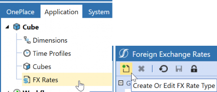
Figure 5.3
If you were to opt for this, keep in mind the number of scenarios you may need as you update your FX rate types by scenario. Below are some general steps to be aware of if you decide to leverage FX rate types by scenario:
Apply the FX rates to the appropriate scenarios and update the scenario settings.
Use Cube FX Settings = False
Rate Type for Revenues and Expenses: [NEW RATE TYPE]
Rule Type for Revenues and Expenses: Periodic
Rate Type for Assets and Liabilities: [NEW RATE TYPE]
Rule Type for Assets and Liabilities: Direct
After setting Cube FX Settings to False, select your custom FX rate type. In Figure 5.4, the new rate types are AverageRatePY and ClosingRatePY.
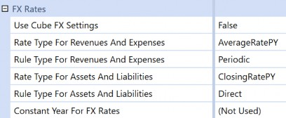
Figure 5.4
Translation
Foundational FX Properties
This section covers all the FX-related properties found in OneStream. You may find this section useful if translation-related questions or issues come up. Within OneStream, translation-related capabilities are found through a combination of cube properties and metadata properties, set on the Scenario, Account, Entity, and Flow members.
Translation › Foundational FX Properties
Cube Properties
This section covers FX-related settings found on Cube Properties, the FX Rates section, and the
Cube Translation Algorithm Type setting.
Translation › Foundational FX Properties › Cube Properties
FX Rates
We have a dedicated FX Rates section with settings on the cube to specify how we want to translate our assets and liabilities, as well as our revenues and expenses.
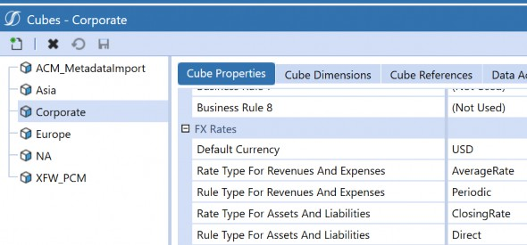
Figure 5.5
On the accounts, we tag each member according to account type (e.g., asset, liability, revenue, expense).
The Account Type and the Switch Type from the Flow member will indicate what rate type and rule type will be used, based on the cube settings above in Figure 5.5 or the scenario settings in Figure 5.7, assuming that cube settings are not used (e.g., Use Cube FX Settings is set to False). OneStream allows for custom translations if these out-of-the-box settings are not sufficient for your processes.
Translation › Foundational FX Properties › Cube Properties
Cube Translation Algorithm Type
The Cube Translation Algorithm Type is a specific setting found on the Cube Properties tab.
There are three choices: Standard, Standard Using Business Rules For FX Rates, and Custom.
The navigation path is Application > Cubes > Select your Cube. On the Cube Properties tab, scroll down to Calculation:
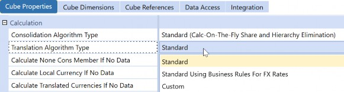
Figure 5.6
Translation › Foundational FX Properties › Cube Properties › Cube Translation Algorithm Type
Standard
This is the default out-of-the-box setting. When your cube is set to Standard, the system will use the settings found in FX Rates (part of Cube Properties) with the combination of the metadata properties on Scenario, Account, Entity, and Flow.
Translation › Foundational FX Properties › Cube Properties › Cube Translation Algorithm Type
Standard with Business Rule
Standard with Business Rule not only tells the system to leverage the settings found in FX Rates (part of Cube Properties) with the combination of the metadata properties on Scenario, Account, Entity, and Flow but also to use a finance rule, which is commonly attached to the cube.
Translation › Foundational FX Properties › Cube Properties › Cube Translation Algorithm Type
Custom
The translation process will be entirely handled by the business rules assigned to the cube. This means the system will not take the standard settings into consideration unless specified in the business rule. An example of this situation would be the need for an extensive currency analysis, involving a dedicated UD dimension for currencies.
Translation › Foundational FX Properties
Metadata Properties
This section covers the FX-related properties for metadata. Because every data point is associated with a cube and an intersection, it is important – when it comes to troubleshooting translation-related issues – that you investigate not only the cube properties but also the properties related to the Scenario, Account, Entity, and Flow dimensions.
Translation › Foundational FX Properties › Metadata Properties
Scenario
Within the scenario’s Member Properties, there is a dedicated FX Rates section.
Use Cube FX Settings
o If set to True, subsequent selections are grayed out, and the scenario member will use whatever rate types are assigned at the cube, as represented in Figure 5.7.
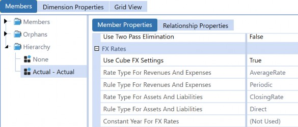
Figure 5.7
Translation › Foundational FX Properties › Metadata Properties
Entity
o If set to False, the subsequent selections become available, and you can select what Rate Type and calculation to use for revenue, expenses, assets, and liabilities. This is useful if you opt to use different FX rate types for that scenario.
The common entity setting for FX is Currency. This currency will typically represent the entity’s local currency.
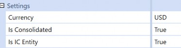
Figure 5.8
There may be instances when you need additional settings adjusted, such as parent entities, which you want to view in a foreign currency, and equity pickup.
Translation › Foundational FX Properties › Metadata Properties › Entity
Intermediary Parents
For the purposes of this section, an intermediary parent is defined as a parent entity that is not the top consolidated entity, and the intermediary parent’s local currency is not the same local currency as the top consolidated entity or that of the application’s default currency. The reason why this currency distinction is important is that when we have intermediary parents with differing currencies, this can create confusion for users who view the consolidation status of these entities.
Figure 5.9 represents such an example. Eb2_Total_EUR represents the intermediary parent where its local currency is EUR, which is different to the top consolidated entity, Total_USD, and the application default currency of USD.
When a user consolidates at Total_USD, the user may then see that Eb2_Total_EUR and the other intermediary parents, E2_Total_EUR, E2a_Total_EUR have a status of TR,CN.
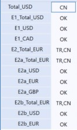
Figure 5.9
First, we need to cover how OneStream performs calculations and consolidations and how that can create user confusion.
When you perform a calculation on a Data Unit, OneStream will run all business rules attached to the Data Unit’s cube and will run all Member Formulas for the Data Unit’s Scenario Type; this is all performed on the currency specified on the Data Unit. Remember that a Data Unit comprises of Cube, Entity, Parent, Consolidation, Scenario, and Time.
When you perform a consolidation on a parent entity, OneStream will iteratively calculate each child entity at its local currency, translate it to its parent’s currency, and then consolidate the child entity’s values up to the common parents. If you have an application with no rates, there is effectively no out-of-the-box translation.
Back to what is presented in Figure 5.9. If we have the following rates in Figure 5.10 and we enter
100 as the local currency amounts in Figure 5.11, what happens?
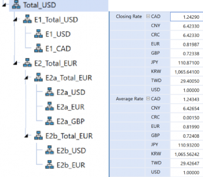
Figure 5.10
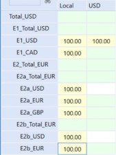
Figure 5.11
If we were to manually calculate the output, we would expect the following:
At E2_Total_EUR: | At E2a_Total_EUR: | At E2b_Total_EUR: |
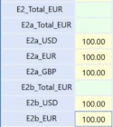 | 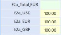 • E2a_USD (USD to EUR): 81.99 EUR (100/1.2197) | 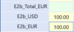 • E2b_USD (USD to EUR): 81.99 EUR (100/1.2197) • E2b_EUR (EUR): |
Total at E2_Total_EUR: 477.32 EUR converted to USD | • E2a_EUR (EUR): 100 | 100 • Total at |
| is 582.19 USD. | • E2a_GBP (GBP): | Eb2_Total_EUR: |
| The 477.32 EUR is from | 113.34 (100/0.88313) | 181.99 EUR |
| 295.33 (E2a_Total_EUR) + | • Total at | |
| 181.99 (Eb2_Total_EUR). | E2a_Total_EUR: | |
| 295.33 EUR | ||
At 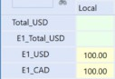 • E1_USD: 100 • E1_CAD: 80.46 (100/1.2429) • Total at E1_Total_USD: 180.46 |
Figure 5.12
Thus, at Total_USD, we would expect to see 762.65 (582.19 + 180.46) USD. However, when we run a consolidate in OneStream, notice – as per Figure 5.13 – what happens…
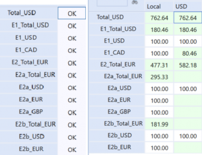
Figure 5.13
Although status appears to be OK, the USD values are not populated for the intermediary parents. There are several instances where the USD value is missing, so what has happened?
The answer has to do with the steps associated with a consolidate.
Let’s say you run a consolidate at E#E2a_Total_EUR:C#Local. Here, the system will run six Step Type calculations as presented in Figure 5.14. You can view each of the step types through detailed logging.
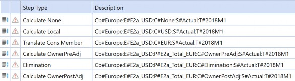
Figure 5.14
Calculate None: kicks off the
CalculateNoneConsMemberstep, which is the
CreateDataUnitCache, which will initiate ReadDataRecordsForDataUnit.
Calculate Local:
CreateDataUnitCache, which will initiate
ReadDataRecordsForDataUnit, Calculate Cons Member, SaveWritableDataCache.
Calculate Cons Member: this will look familiar as this is the order of operations performed in the consolidation engine, which is part of DUCS (Data Unit Calculation Sequence).
| 1. Clear previously calculated data for the Data Unit (based on StorageType, will not clear durable data). |
| 2. Run scenario formulas, if any. |
| 3. Run reverse translations, if any. |
| 4. Execute Business Rules 1 and 2 as assigned to the cube. |
| 5. Formula Passes 1 through 4 (Account formulas, then Flow formulas, then UD formulas) as assigned to the member on the formula. |
| 6. Execute Business Rules 3 and 4 as assigned to the cube. |
| 7. Formula Passes 5-8 (Account formulas, then Flow formulas, then UD formulas) as assigned to the member on the formula. |
| 8. Execute Business Rules 5 and 6 as assigned to the cube. |
| 9. Formula Passes 9-12 (Account formulas, then Flow formulas, then UD formulas) as assigned to the member on the formula. |
| 10. Execute Business Rules 7 and 8 as assigned to the cube. |
| 11. Formula Passes 13-16 (Account formulas, then Flow formulas, then UD formulas) as assigned to the member on the formula. |
Notice how Figure 5.15, found in the application’s detailed logging, supports the
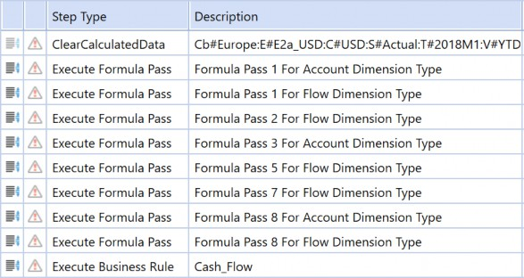
DUCS described above.
Figure 5.15
Translate Cons Member: will go through the same step type iteration as Calculate Local, as presented in Figure 5.16. Within Translate Cons Member is a Calculate Cons Member; the system will go through the same order of operations (DUCS) in the consolidation engine, as presented in Figure 5.17.
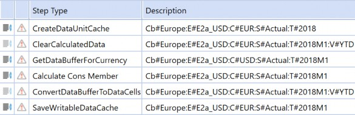
Figure 5.16
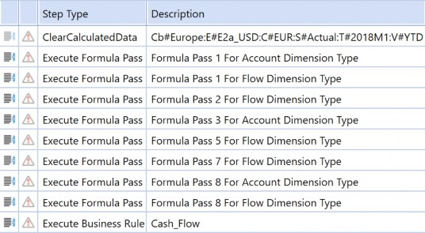
Figure 5.17
In Figure 5.17, the system is essentially taking E2a_USD:C#Translated as E2a_USD:C#EUR. In other words, at E2a_Total_EUR:C#EUR, the system performs the following:
Calculate
E2a_EUR:C#LocalasE2a_EUR:C#EURCalculate
E2a_USD:C#LocalasE2a_USD:C#USDCalculate
E2a_GBP:C#LocalasE2a_GBP:C#GBPTranslate
E2a_EUR:C#Translatedwhich isE2a_EUR:C#EURTranslate
E2a_GBP:C#Translatedwhich isE2a_GBP:C#EURTranslate
E2a_USD:C#Translatedwhich isE2a_USD:C#EUR
Thus, the expected end result will be local calculated and consolidated. Any local currency will be populated in the equivalent reporting currency (e.g., if local is USD, you will see the same amount in USD. If local is EUR, you will see the same amount populated in EUR). Because E2a_Total_EUR’s local currency is EUR and the base members roll up to this parent, the consolidation will translate the base’s local currencies to EUR, as depicted in Figure 5.18.
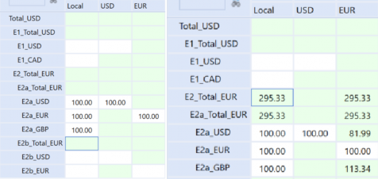
Figure 5.18
| Note: USD is not calculated because USD is not the first parent’s local currency; thus, it is not part of the consolidate calculations. If you need USD to appear for the base entities that roll-up to the non-USD intermediary parent, you will need to run a Translate or Force Translate. |
If you were to toggle to the Calc Status at C#USD, you would notice that a translation is needed.
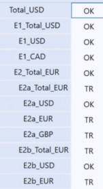
Figure 5.19
A Translate or Force Translate will lead to three additional steps:
Translate to
E2a_EUR:C#USDTranslate to
E2a_GBP:C#USDTranslate to
E2a_USD:C#USD
If we have intermediary parents where their local currency is not the same as the top consolidated parent or application default currency, is this a problem? The answer is… it depends, based on who and how users are consuming the data.
If users will always use
C#Localand know that – behind the scenes – the values reflected are the entity’s local currency, then we don’t need to do much.If users are viewing the intermediary parents in a different currency – and only that portion of the hierarchy – then it is not so much of a problem on their side. It might be more problematic on the consolidated/corporate side if there is the requirement to have everything in a different reporting currency.
Let’s say that we need everything in a reporting currency of USD. We have a few options (again, this is not an exhausive list, but it should give you a good starting point).
| Option 1: Keep the structure as is, but you will need to add additional translation steps at the base entities followed by translation steps on the parent entities. | |
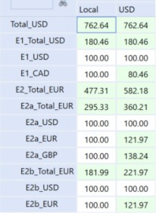 Figure 5.20 | Pros • You will get expected results. |
Cons • The translation steps will be additional processing and will take additional time on top of your normal consolidation. This might be cumbersome if you have several base entities and parents. In other words, you need to run a translate and also a consolidate. • Your calc status might still look wonky at USD. 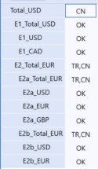 Figure 5.21 • You will need to be mindful of your overrides and the number of accounts that you want to view in this currency. • If this entity structure is the primary structure, and the only structure, AND you do not want to use an alternate structure where the intermediary parents’ currency aligns to the consolidated’s currency, you might end up having to write a custom business rule with translation in it. There are additional steps needed, such as creating a sub-set of stat accounts to hold the overrides, changing their adjustment type to data entry, assuming you do not plan to use journals on those accounts and then the testing that comes with these changes. Honestly, even though I present this as an option, it is not the most ideal or performant option. | |
| Option 2: Set the primary hierarchy to have the intermediary parents’ local currency the same as the top consolidated member or the application’s default currency. Create an alternate hierarchy with specific nodes for your reporting purposes. In other words, if you were using a USD application with USD as the primary reporting currency, the primary hierarchy would have these intermediary parents as USD, while there would be an alternate hierarchy with the foreign currency. You may have a situation where you only need a sub-consolidation in foreign currency rather than seeing the top of the house in multiple currencies. | |
Pros • You will get the expected results. • Users who need to look up intermediary parents in a different currency will continue to be able to do so. | Cons • Another hierarchy to maintain. • Consolidate on both hierarchies (although this can be handled as one step via a data management job). |
| Option 3: Have only one hierarchy where the intermediary parents are USD. Forget the original structure of the non-USD intermediary parents! | |
Pros • Your calc status report is no longer wonky. | Cons • You do not satisfy the reporting requirement to be able to view the intermediary parent in another currency. Even though this is an option, it is not a valid or viable option if you must have this reporting requirement. |
| Option 4: Auto translation currencies set on the entity. Values computed with the auto translation currencies do not consolidate (e.g., provide translated eliminations at the base entity, which is then consolidated up to the parent entity). | |
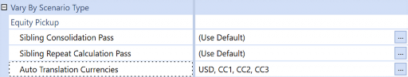 Figure 5.22 | |
Pros • You will be able to quickly review the results in the specified currency at the base entities. | Cons • The amounts reflected are not the same amounts as a true consolidation (e.g., elimination) and will not consolidate up. This setting is truly for reporting purposes and does not change what the consolidation engine is doing. • If you have this applied to several entities and you have a large Cube View, this may significantly increase your Cube View runtimes. • Does not enable the ability to enter overrides on parents (e.g., equity). |
Translation › Foundational FX Properties › Metadata Properties › Entity
Auto Currency Translation
Auto currency translations can be used for equity pickup calculations when an entity needs to be translated to a sibling holding company’s local currency during a consolidation. The use of auto currency translation with equity pickup requires the use of a custom finance rule that has the equity pickup logic. Auto currency translation settings may also be used to automatically translate certain entities to a specified currency for reporting needs and the only benefit is really at the base entities; if there is a need to look at parent entities in foreign currencies at the consolidated amounts (e.g., eliminations taken into consideration), this setting is not a viable option.
Be mindful of the number of entities that will use auto currency translation functionality, as this will impact performance on both the calculation/consolidation side as well as on the reporting side.
Auto currency translation will affect dynamic calculations. For example, if you have
A#Headcountas a dynamic calculation, then the output will reflect the translated amount. A better approach for handling calculated accounts that should not be translated is to write it as a stored calculation, using a Member Formula with the appropriate FormulaPass and account type assigned.
To add auto translation currencies:
Navigate to Application > Cube > Dimensions > select relevant Entity dimension > select relevant Entity member.
On the Member Properties tab, scroll down to Vary by Scenario Type.
Click on the ellipse’s icon next to Auto Translation Currencies.
If Scenario Type is applicable, then assign by Scenario Type. In the Stored Value row, enter the three-letter currency. Multiple currencies can be separated by a comma.
Figure 5.23
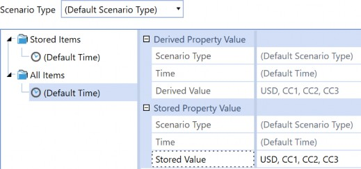
Figure 5.24
Translation › Foundational FX Properties › Metadata Properties
Flow
There is a specific setting called Switch Type under the settings section for each Flow member.
If Switch Type is set to False, this tells the system to use the account’s account type to determine which rate type and rule type to use for translations. If Switch Type is set to True for the given Flow member, then the account at this Flow member will have the account type “switched”; in other words, if my account’s account type is Asset and the Flow member’s Switch Type is True, then the system will use the Revenue and Expenses Rate Type and Revenue and Expenses Rule Type for translations.
Translation › Foundational FX Properties › Metadata Properties › Flow
FX
Commonly, there will be an FX hierarchy within the Flow dimension (highly recommended) to ensure that FX components are captured. This FX node captures the differences in the translation rates (e.g., average rate versus closing rate) between the components of a balance sheet account (e.g., beginning balance, activity, and ending balance).
Flow settings, in my experience (and at a minimum), usually include the following FX members:
FXOpen: a Member Formula that calculates the FX on the opening balance.
FXMovement: a Member Formula calculated as the difference between current closing rate and current average on the movement amount.
FXOverrideBalance: a Member Formula that calculates the FX on ending balances that have been overridden.
FXHistOverrideMovement: a Member Formula that calculates the FX on movements that have been overridden.
Members under FX will have the following settings:
Switch Sign = False
Switch Type = True
Refer to the Blueprint application for these Flow examples.
Translation › Foundational FX Properties › Metadata Properties
Account
The account’s Account Type – in conjunction with the Switch Type on the Flow member – will dictate how translation will be handled based on the FX Rate Type defined in the cube (Application
> Cubes > Select your Cube > on the Cube Properties tab, scroll down to FX Rates) unless otherwise specified in the scenario’s FX rates.
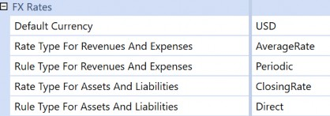
Figure 5.25
In our above Cube Properties example, this means that accounts with account type of Revenue or Expense will use AverageRate and the Periodic calculation, while accounts with account type of Asset or Liability will use ClosingRate and the Direct calculation, assuming that Switch Type on the Flow member is set as False.
Below is the account type associated with the account member.
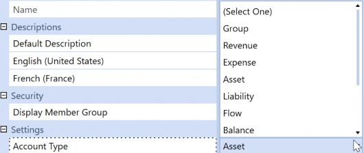
Figure 5.26
Translation › Foundational FX Properties › Metadata Properties › Account
Non-Translating Accounts
Accounts that should not be translated should have the account type: Flow, Balance, Balance Recurring, or Nonfinancial. Thus, the amounts at C#Local and C#[Reporting Currency] will be the same amount output.
In the example below, I have account 110005 set to Balance. After I run a consolidate, the USD amount is the same as local.
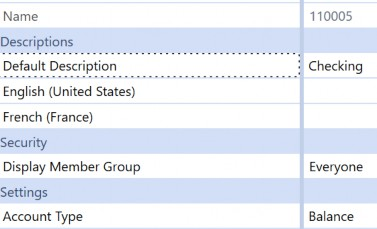
Figure 5.27
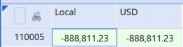
Figure 5.28
| Note: The account type, Group, is used as a label, simply to group a number of accounts together. |
Translation › Foundational FX Properties › Metadata Properties › Account
CTA (Currency Translation Adjustment)
CTA stands for currency translation adjustment. Its purpose is to capture the FX differences between the average and closing rates – per period – as P&L accounts are translated using the average rates, while balance sheet accounts are translated using the closing rates.
If you have an application with translations already enabled, you will already be aware of the CTA and relevant FX Flow members. If you have an application where you would like to enable OneStream’s translation capabilities, then CTA will be an account member with a Member Formula. The two common logic approaches that I have seen:
Plug Calculation: Total assets - total liabilities and equity (since net income would roll into retained earnings, this difference would be CTA).
True FX Calculation: uses the Flow dimension FX hierarchy, in which the FX differences are already calculated.
Both will end up with the same result.
Refer to the Blueprint application for a CTA example.
Translation › Foundational FX Properties › Metadata Properties
Currency Overrides
I like to think of currency overrides as an accounting or consolidation process where you want to use an already defined amount or rate in lieu of the current translated amount or current rates.
Assuming you are managing an application that does not have currency overrides enabled, and you would like to start using OneStream for your override submissions, there are two common options to handle overrides:
Out-of-the-box property settings on the Flow members.
Using Member Formulas on the Flow member that represents the currency override, and text fields on the identified override accounts.
Currency overrides are handled by a combination of the Account and Flow dimensions. However, the first step is to gather your override requirements. Is there a need to have both rate and amount overrides, or is one or the other sufficient?
Translation › Foundational FX Properties › Metadata Properties › Currency Overrides
Out-of-the-Box Settings for Amount Overrides
OneStream provides out-of-the-box capabilities to set up amount overrides. However, it is important to note that the out-of-the-box settings assume you only need one currency override, not multiple currency overrides. These out-of-the-box settings are found in the Flow Processing section of a Flow member’s properties.
Flow processing types include:
Is Alternate Input Currency: indicates dollar override. If you opt for this setting, the relevant accounts must be flagged as True for Use Alternate Input Currency In Flow.
Is Alternate Input Currency for All Accounts: all accounts will be able to use this alternate currency. This setting follows the rules of constraint. If the Flow member is set to True for Is Alternate Input Currency for All Accounts, and accounts have constraints set for the Flow dimension, the Flow member is required to be a member of the constraint.
Translate using Alternate Input Currency, Input Local: will override the translated value with the amount inputted at the local currency level.
Translate using Alternate Input Currency, Derive Local: will override the translated value and change the local currency value to be derived based on the local currency rate. A use case for this setting would be input currencies (refer to next section).
Additional settings under Flow processing include:
Alternate Input Currency: contains a list of all available currencies for the source value override. If this Flow member has a USD override, then it should be set to USD. If the override is a EUR override, then it should be set to EUR.
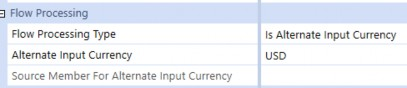
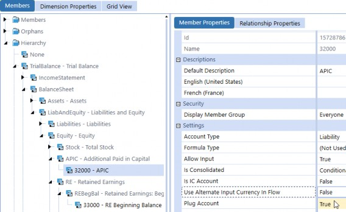
Option 1: Your override member’s Flow Processing Type is set to Is Alternate Input Currency and the Alternate Input Currency is defined as presented in Figure 5.29. Figure 5.29 You will need to make sure your relevant account’s Use Alternate Input Currency In Flow is set to True. Figure 5.30 If you have an ending balance member, you will also need to ensure that its Flow Processing Type is set to Translate Using Alternate Input Currency, Input Local as shown in Figure 5.31, and its Source Member For Alternate Input Currency is set to the override member as presented in Figure 5.32. |
Source Member for Alternate Input Currency: Define the actual Flow member to override the value for the current Flow member.
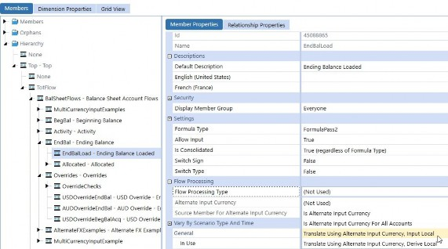 Figure 5.31 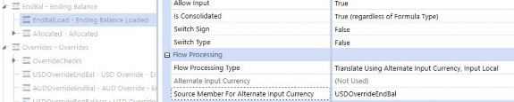 Figure 5.32 | |
Pros • A combination of Is Alternate Input Currency on the Flow override member and the individual setups on accounts restricts the number of accounts that are valid for overrides. | Cons • These settings are only good for a single override. In other words, if you have multiple currency overrides, this option is not viable. • Additional effort or maintenance is needed for setting updates in the Account dimension. |
| Option 2: The override member’s Flow Processing Type is set to Is Alternate Input Currency For All Accounts, as presented in Figure 5.33. The steps involved are similar to those of Option 1, except you do not need to go to the Account dimension to update the member’s Use Alternate Input Currency In Flow as long as the Flow member is part of the Flow constraint. You will need to ensure your Ending Balance Flow member’s Flow Processing Type is set to Translate Using Alternate Input Currency, Input Local, and its Source Member For Alternate Input Currency is set to the override member. |
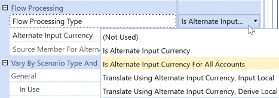 Figure 5.33 | |
Pros • Reduces efforts needed to update settings in Accounts dimensions for override accounts. | Cons • These settings are only good for a single override. In other words, if you have multiple currency overrides, this option is not viable. • Additional considerations for controls if you do not want users to be able to enter overrides for all accounts. |
Translation › Foundational FX Properties › Metadata Properties › Currency Overrides
Rate Overrides
There are no out-of-the-box settings to facilitate rate overrides. If you need to use rate overrides and you cannot use amount overrides, then you will need to leverage business rules or Member Formulas.
Translation › Foundational FX Properties › Metadata Properties › Currency Overrides
Member Formulas and Text Fields
The use of Member Formulas and text fields is the most common approach for currency overrides as they allow for multiple currency overrides. For accounts that are considered eligible for overrides, we commonly recommend using a text field with something like Override. The override logic is then handled on the Flow members, such as USDOverrideEndBal and EndBalLoad from the Flow dimension.
Refer to the Blueprint application for a CTA example.
Translation › Foundational FX Properties › Metadata Properties
Input Currencies
As mentioned in the introduction to this chapter, transactional currency will be used synonymously with input currency. While it is common to have transaction currency captured in the ERP, there may be cases where there is a requirement (or need) to handle transactional currency reporting and local currency translations within OneStream.
This next part is based on a real-life story where a company had such specific reporting needs. In this case, S#Actual is actual rates applied to local currency amounts, and this view is commonly compared to S#Actual_Budget, where the amounts are transactional (input) currencies with a constant (budget) rate. The company’s ERP has both local currency amounts and transactional currency amounts.
You can either consider the use of a UD dimension with custom translation rules or leverage flow settings. This section covers leveraging flow settings to handle transactional and local currency within the OneStream application, which eliminates the need for custom rule writing.
Enable currencies within the application.
In the Flow dimension, create a grouping (e.g.,
Total_TC, Tot_TC, TC_Total; again, whatever makes sense to you and/or the users) that is a sibling to your top member (Total
equivalent), which will present the total transactional (input) currencies.
In the screenshot below, there is a suffix of _TC to represent the transactional/input currency, but you can just name them as the currency (e.g., without the suffix). In other words, you simply need something within the Flow hierarchy to discern which grouping of currencies represents the translation of transactional currencies versus local currencies.
Figure 5.34
Transaction currencies (e.g., AED_TC) will be where the data is loaded. Each transactional currency member in the Flow dimension will have the following settings:
o Flow Processing Type is set as Is Alternate Input Currency for All Accounts.
o Alternate Input Currency as the relevant currency. For example, if the Flow member (e.g., CNY_TC) represents CNY transaction currency, then the alternate input currency is CNY.
In the Flow dimension, create a grouping (e.g.,
Total_LC,Tot_LC,LC_Total; whatever makes sense to you and/or the users to represent local currencies) in the Flow hierarchy. This node can be a sibling to your ending balance member.
Underneath this grouping, create all the members that will represent the transactional (input) currencies that will be translated to local currency.
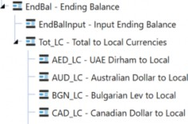
Figure 5.35
Each member under the total local currency section will have the following settings:
o Flow Processing Type is set as Translate Using Alternate Input Currency, Derive Local.
Source Member For Alternate Input Currency will be the corresponding transactional currency member in the Flow hierarchy.
Ensure that FX Rates are entered.
| Note: Remember that OneStream will leverage triangulation. As a result, you only need one rates table (e.g., all currencies relative to USD), and the system will derive the remaining translations (e.g., USD to EUR, etc.). |
Create a Cube View where you can view the transactional currency and local currency to validate the output is correct. Suggested setup:
o Columns: entity and C#Local, C#USD, etc.
Rows: account and the Flow members for transactional currencies and local currencies.
o For reporting purposes, the appropriate combination of dimensions will be the equivalent of F#Tot_LC: C#USD (where F#Tot_LC represents the sum of all the currencies translated to the local currency), or F#Tot_LC:C#EUR.
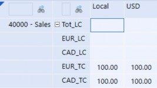
Figure 5.36
In my example above, I have a USD entity in which I enter 100 to EUR_TC and CAD_TC. Upon save, the same amounts will show up in USD since the entity’s local currency is USD (C#Local as USD = C#USD). Again, for reporting purposes, the intersection should be the equivalent of F#LC_Total: C#USD. After a consolidate, notice that the local amounts are derived in EUR_LC and CAD_LC. The rates used were 1.25 for CAD and 1.229 for EUR, so the expected amounts are 125 and 122.90 USD, respectively, for a total of 247.90 USD (Figure 5.37).
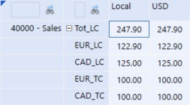
Figure 5.37
Note: With this real-life story, we leveraged Scenario Types to further differentiate between the scenarios; here, one scenario ( If you are considering the use of input currencies, we recommend bringing in the right personnel to help you determine how to implement transactional currencies, especially if your application already has existing data. |
Translation
Reporting Actuals with Prior Year Rates
Now, following everything we have covered so far, let’s assess the ability to report actuals using prior year rates. What functionalities within OneStream will support this requirement, and what functionality should we be using?
I have worked on several engagements where there were only a handful of requirements, such as “The ability to report actuals with prior year actual rates” and “The ability to report actuals with budget rates” and that was all this user base needed. As a result, I leaned towards one choice (in this case, it was additional FX rate types). I have also worked on a case where several scenarios were needed to handle all sorts of FX-neutral reports, and because this application was large and administrator-heavy, I leaned towards another choice (in this case, it was standard with business rules and attaching translation logic to the cubes).
At the end of the day, my goal in this section is to provide you with a high-level assessment of the pros and cons associated with each of the functionalities but, ultimately, it will be up to your company stakeholders, consulting partners, and you – as the administrator – to assess and arrive at an informed conclusion. As always, the list below is not exhaustive, but I do hope it will provide you with a foundation to get started.
Translation › Reporting Actuals with Prior Year Rates
Additional FX Rate Types and Standard
You could create additional FX rate types like AverageRatePY and ClosingRatePY and continue to leverage the standard Cube Translation Algorithm Type for your given scenario(s). The primary changes would be:
Adding FX rates and entering the FX rates.
Creating the necessary scenarios. Then, within the scenario’s member properties, under the FX Rates section, you would set Use Cube FX Settings to False and update to use these FX rate types.
Below is a table of the pros and cons associated with the creation of FX rate types.
| Pros | Cons |
|---|---|
| Standard translation functionality is maintained. | You need to create several FX rate types. |
| Rates are explicit and defined by each rate type. | Increased efforts to input, copy, or load the same set of rates across multiple rate types for each currency. |
| If you are using FX rate types for additional translation capabilities, you will not need to change the Cube Translation Algorithm Type. |
Figure 5.38
Translation › Reporting Actuals with Prior Year Rates
FX Rate Types and Standard with Business Rules
The Cube Translation Algorithm Type of Standard with Business Rules is particularly useful for custom translations where you want to leverage existing rates that are already entered into the application and you do not want redundant FX rate types. For example, if you want a scenario that represents actuals with prior year rates, you decide to use the ClosingRate or AverageRate with the already entered rates to T#[last year] instead of creating a new FX rate type and entering last year’s rates into T#[this year].
In order for this to work, you will need to…
Write the finance business rule to support your custom translation requirements.
Update the Cube Translation Algorithm Type to Standard with a Business Rule.
Assign the finance business rule to the cube at the beginning of the processing sequence (e.g., Business Rule 1-3, depending on how custom your application is).
We commonly see the custom translation rule assigned as Business Rule 1, but again, I want to highlight the unique circumstances in which you might want to assign it in a different order. For example, I was on an engagement that consisted of non-controlling interest calculations and a custom elimination which needed to be populated at base entities. As such, this particular application had the non-controlling interest calculation as Business Rule 1, the custom elimination as Business Rule 2, and the custom translation as Business Rule 3.
Create the necessary scenarios.
Consider the Flow’s switch type implications with the account type. Do you want the Flow member to have Switch Type as True, or should it be False?
Below is a table of the pros and cons associated with using Standard with Business Rules.
| Pros | Cons |
|---|---|
| Standard translation functionality is maintained. | Requires rule writing. |
| Reduced maintenance on the number of rate types. | It may be difficult for the user to understand where the rate originates. |
| Reduces manual efforts to enter the same rates across several rate types. |
Figure 5.39
Translation
Loading FX Rates
This section covers the various ways to input FX rates into the OneStream application. The most common methods include:
Entering directly into the FX rates grid.
Submitting through Excel.
Using a direct connect.
Translation › Loading FX Rates
FX Rates Grid
The navigation path is Application > Cube > FX Rates. This is the out-of-the-box method where you select your views and FX rate type and enter the rates. With this FX grid, you can:
Create new FX rate types to represent various FX situations (e.g.,
PlanAverageRate,PlanClosingRate).FX rates are entered into this grid by FX rate type.
FX rate types can then be applied to scenario members.
FX rate types can be further differentiated by Scenario Type and/or cubes to govern how translation should be handled.
The FX grid provides the flexibility to select how you want to see your FX rate type, time, source currency, destination currency, row axis, and column axis. A question we often get asked is, “What is the optimal default display?” Generally, the answer is something along the lines of, “Whatever combination makes sense for you!” but an example view that I personally like to use is shown below.
This example displays time across the rows, with destination currencies in the columns. Notice how I have Source Currency selected specifically as USD. Thus, the rates displayed are USD:destination currency. In other words, 1 USD:1.2429 CAD.
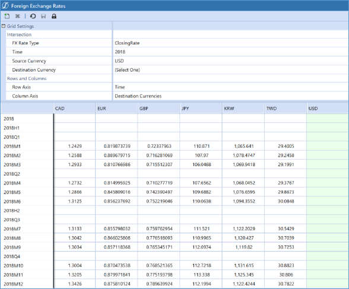
Figure 5.40
| Note: If there is no FX rate entered/loaded for an existing currency, then the translation will not occur. In other words, you will see the local currency amount but no amount in USD; check your FX grid to see if you have a rate there. |
To prevent changes to entered FX rates, administrators or users who have access to the FX grid can lock by the FX rate types and the time. OneStream recommends that the administrator manages the locking of FX rate types.
| Note: If you don’t see the lock icon – as per the screenshot below – you likely have an older version of OneStream. This is a relatively recent feature that was made available after 6.0. |
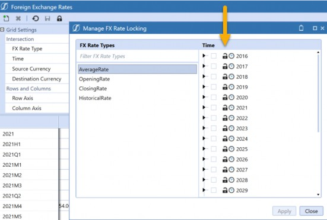
Figure 5.41
Translation › Loading FX Rates
Excel or Spreadsheet with Submit Cells
To submit rates in Excel, use: XFSetFxRate(value, storeZeroAsNoData, fxRateType, time, sourceCurrency, destCurrency).
Example: =XFSetFxRate(1.4,TRUE,"AverageRate","2021M4","USD","CAD"). When the user clicks Submit Sheet, this will update the FX rates in the system.
Note: The rate entered should be read as source:destination. In other words, if the source is USD and destination is CAD, then it is USD:CAD, which is 1 USD = 1.4 CAD |
Translation › Loading FX Rates
Direct Connect
A custom connector rule is written to directly pull the FX rates from the source system or web service like Thomson Reuters. Typically, this would require a support ticket and, depending on the contracts, someone can assist with getting you started with the integration.
Translation
Viewing FX Rates
There are various ways to enable the viewing of FX rates. The common one is the out-of-the-box FX rates grid, but a familiar ask is to limit a person’s ability to modify FX rates. Thus, this section covers the common methods for users to view FX rates:
FX Rates Grid
Excel or Spreadsheet with Get Cells
Cube Views using dynamic reporting members
Translation › Viewing FX Rates
FX Rates Grid
The FX rates grid is where you can view FX rates after you load them. The navigation path is the same as we saw with loading rates, namely: Application > Cube > FX Rates. Here, the user can make selections to FX rate type, time, source currency, destination currency, row axis, and column axis.
Translation › Viewing FX Rates
Excel or Spreadsheet with Get Cells
To retrieve rates and view them in Excel, use:
XFGetCalculatedFxRate(displayNoDataAsZero, fxRateType, time, sourceCurrency, destCurrency)
Example: =XFGetCalculatedFxRate(TRUE,"AverageRate","2021M4","CAD","USD")
Translation › Viewing FX Rates
Cube Views Using Dynamic Reporting Members
If you need users to view FX rates, but they do not have the relevant security rights to directly access the FX grid, one method would be to use a UD dimension (hopefully you have reserved your UD8 for reporting calcs) where you bring the UD8 member in as a Cube View.
Note: There is a pane that provides you with all the available functions needed to write your rule. As you can see, we have various GetCalculatedFxRates, and if you click on one of them, you get a sample of what you need to define. So, in the example below, we need to determine the rateType and then fill in the parameters for GetCalculatedFxRate. The parameter for the source currency is api.Entity.GetLocalCurrency.Id, and the destination is api.Cons.GetCurrency(api.Pov.Cons.Name).Id. |
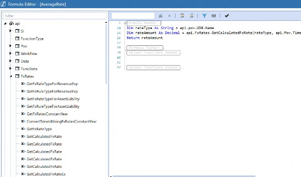
Figure 5.42
Then, on the Cube View, populate the default members (hint: account doesn’t really matter) and set the Row Expansion to the UD8 and Currencies.
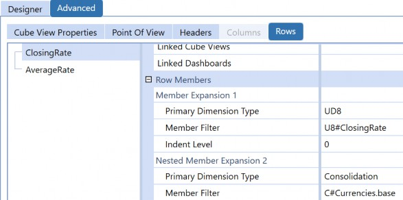
Figure 5.43
This Cube View assumes the user accessing it is viewing currency rates in relation to the entity’s local currency. This explains why – in the UD8 Member Formula – the example specifically identified the source currency to be the entity’s local currency. In other words, the rates will be [selected entity’s local currency]:[destination currency].
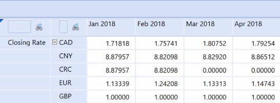
Figure 5.44
It looks like someone forgot to load CRC rates for March and April 2018 😊.
Translation
Conclusion
This chapter was all about where an administrator can enable translations in the OneStream application. The translation process is dependent on the properties found on the Cube, Scenario, Account, Entity, and Flow, as they are all interrelated. Specific translation features that OneStream handles include handling intermediary parents, auto currency translations, CTA (currency translation adjustment), overrides, and transactional currencies.
Translation depends on the rates captured in the system; in other words, if there is no rate entered for a given period, then the local amount will not translate for that given period. The most common methods to enter FX rates include the out-of-the-box FX rates grid, an Excel submission, or through a direct connect.
Depending on your company’s security and reporting requirements, the most common ways FX rates can be viewed include the out-of-the-box FX rates grid, Excel with the get formula, or Cube Views with the use of dynamic reporting members.